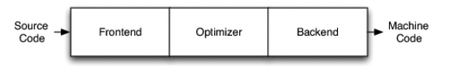
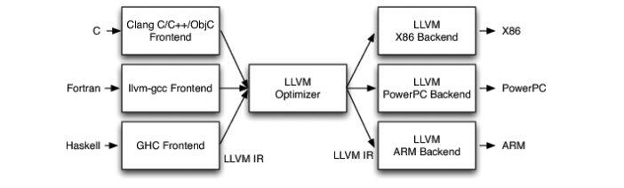
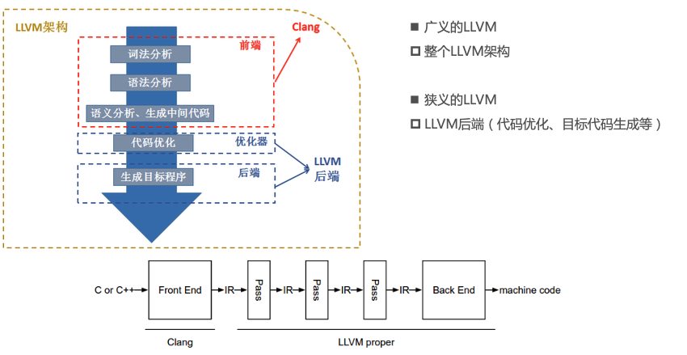
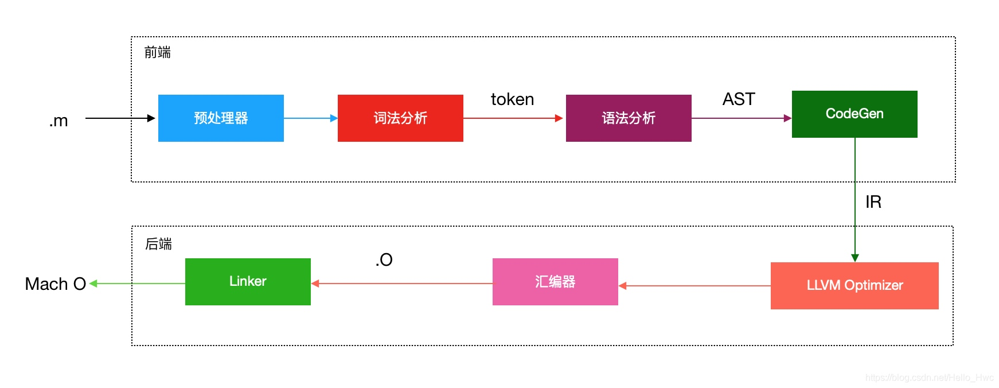
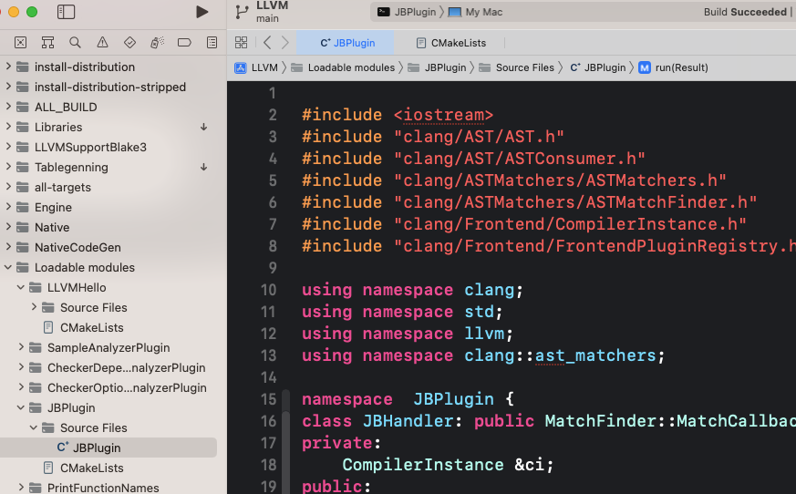
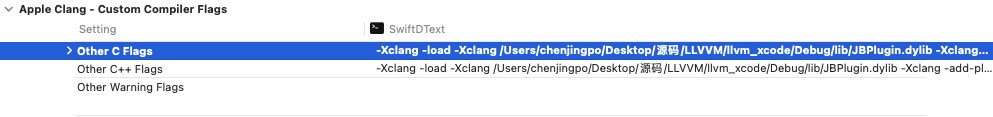
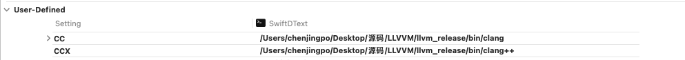
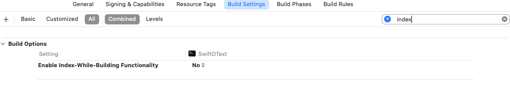
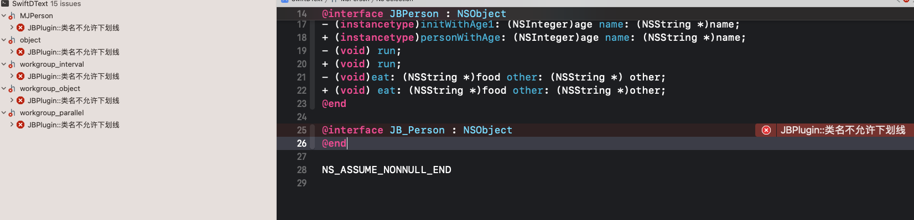

<!DOCTYPE html>


<html lang="en">
  

    <head>
      <meta charset="utf-8" />
        
      <meta
        name="viewport"
        content="width=device-width, initial-scale=1, maximum-scale=1"
      />
      <title>llvm |  ayer</title>
  <meta name="generator" content="hexo-theme-ayer">
      
      <link rel="shortcut icon" href="/favicon.ico" />
       
<link rel="stylesheet" href="/dist/main.css">

      <link
        rel="stylesheet"
        href="https://cdn.jsdelivr.net/gh/Shen-Yu/cdn/css/remixicon.min.css"
      />
      
<link rel="stylesheet" href="/css/custom.css">
 
      <script src="https://cdn.jsdelivr.net/npm/pace-js@1.0.2/pace.min.js"></script>
       
 

      <!-- mermaid -->
      
      <script src="https://cdn.jsdelivr.net/npm/mermaid@8.9.2/dist/mermaid.min.js"></script>
      
    <link rel="alternate" href="/atom.xml" title="ayer" type="application/atom+xml">
</head>
  </html>
</html>


<body>
  <div id="app">
    
      
    <main class="content on">
      <section class="outer">
  <article
  id="post-iOS学习/其他/llvm实践"
  class="article article-type-post"
  itemscope
  itemprop="blogPost"
  data-scroll-reveal
>
  <div class="article-inner">
    
    <header class="article-header">
       
<h1 class="article-title sea-center" style="border-left:0" itemprop="name">
  llvm
</h1>
 

      
    </header>
     
    <div class="article-meta">
      <a href="/2023/03/30/iOS%E5%AD%A6%E4%B9%A0/%E5%85%B6%E4%BB%96/llvm%E5%AE%9E%E8%B7%B5/" class="article-date">
  <time datetime="2023-03-29T16:01:06.000Z" itemprop="datePublished">2023-03-30</time>
</a>   
<div class="word_count">
    <span class="post-time">
        <span class="post-meta-item-icon">
            <i class="ri-quill-pen-line"></i>
            <span class="post-meta-item-text"> Word count:</span>
            <span class="post-count">3.1k</span>
        </span>
    </span>

    <span class="post-time">
        &nbsp; | &nbsp;
        <span class="post-meta-item-icon">
            <i class="ri-book-open-line"></i>
            <span class="post-meta-item-text"> Reading time≈</span>
            <span class="post-count">13 min</span>
        </span>
    </span>
</div>
 
    </div>
      
    <div class="tocbot"></div>


  
    <div class="article-entry" itemprop="articleBody">
       
  <h3 id="前言"><a href="#前言" class="headerlink" title="前言"></a>前言</h3><hr>
<blockquote>
<p>一般可以将编程语言分为两种，编译语言和直译式语言<br>编译语言: 像<code>C++</code>、<code>OC</code>都是编译语言。编译语言在执行的时候，必须先通过编译器生成机器码，机器码可以直接在<code>CPU</code>上执行，所以执行效率较高。<br>解释语言：<code>javaScript</code>、<code>Python</code>都是直译式语言。直译式语言不需要经过编译的过程，而是在执行的时候通过一个中间的解释器将代码解释为<code>CPU</code>可以执行的代码。所以，较编译语言来说，直译式语言效率低一些，但是编写的更灵活。<br><code>OC</code>和<code>Swift</code>。二者都是编译语言。<code>OC</code>编译都是依赖于<code>Clang+LLVM</code>,<code>Swift</code>赖于<code>Swiftc+LLVM</code>。</p>
</blockquote>
<h3 id="LLVM"><a href="#LLVM" class="headerlink" title="LLVM"></a>LLVM</h3><ul>
<li><a target="_blank" rel="noopener" href="https://llvm.org/">官网</a></li>
<li><code>The LLVM Project is a collection of modular and reusable compiler and toolchain technologies.</code></li>
<li> <code>LLVM</code>项目是模块化、可重用的编译器以及工具链技术的集合</li>
</ul>
<h3 id="架构"><a href="#架构" class="headerlink" title="架构"></a>架构</h3><h4 id="传统的编译器架构"><a href="#传统的编译器架构" class="headerlink" title="传统的编译器架构"></a>传统的编译器架构</h4><p></p>
<ul>
<li><code>Frontend</code>:前端<ul>
<li>词法分析、语法分析、语义分析、生成中间代码</li>
</ul>
</li>
<li><code>Optimizer</code>:优化器<ul>
<li>中间代码优化</li>
</ul>
</li>
<li><code>Backend</code>:后端<ul>
<li>生成机器码</li>
</ul>
</li>
</ul>
<h4 id="LLVM架构"><a href="#LLVM架构" class="headerlink" title="LLVM架构"></a>LLVM架构</h4><p></p>
<ul>
<li>不同的前端后端使用统一的中间代码<code>LLVM Intermediate Representation (LLVM IR)</code></li>
<li>如果需要支持一种新的编程语言，那么只需要实现一个新的前端</li>
<li>如果需要支持一种新的硬件设备，那么只需要实现一个新的后端</li>
<li>优化阶段是一个通用的阶段，它针对的是统一的LLVM IR，不论是支持新的编程语言，还是支持新的硬件设备，都不需要对优化阶段做修改</li>
<li>相比之下，GCC的前端和后端没分得太开，前端后端耦合在了一起。所以GCC为了支持一门新的语言，或者为了支持一个新的目标平台，就 变得特别困难</li>
<li>LLVM现在被作为实现各种静态和运行时编译语言的通用基础结构(GCC家族、Java、.NET、Python、Ruby、Scheme、Haskell、D等)</li>
</ul>
<h5 id="Clang"><a href="#Clang" class="headerlink" title="Clang"></a>Clang</h5><ul>
<li>什么是<code>Clang</code>?<ul>
<li>LLVM项目的一个子项目</li>
<li>基于LLVM架构的C/C++/Objective-C编译器前端 p <a href=":http://clang.llvm.org/">官网</a></li>
</ul>
</li>
<li>相比于<code>GCC</code>，<code>Clang</code>具有如下优点<ul>
<li>编译速度快:在某些平台上，<code>Clang</code>的编译速度显著的快过<code>GCC</code>(Debug模式下编译OC速度比GGC快3倍)</li>
<li>占用内存小:<code>Clang</code>生成的<code>AST</code>所占用的内存是<code>GCC</code>的五分之一左右</li>
<li>模块化设计:<code>Clang</code>采用基于库的模块化设计，易于<code>IDE</code> 集成及其他用途的重用</li>
<li>诊断信息可读性强:在编译过程中，<code>Clang</code> 创建并保留了大量详细的元数据 (<code>metadata</code>)，有利于调试和错误报告</li>
<li>设计清晰简单，容易理解，易于扩展增强</li>
</ul>
</li>
</ul>
<h4 id="Clang与LLVM"><a href="#Clang与LLVM" class="headerlink" title="Clang与LLVM"></a>Clang与LLVM</h4><p></p>
<h3 id="OC源文件的编译过程"><a href="#OC源文件的编译过程" class="headerlink" title="OC源文件的编译过程"></a>OC源文件的编译过程</h3><p></p>
<ul>
<li>命令行查看编译的过程:<code>$ clang -ccc-print-phases main.m</code>  <figure class="highlight plaintext"><table><tr><td class="gutter"><pre><span class="line">1</span><br><span class="line">2</span><br><span class="line">3</span><br><span class="line">4</span><br><span class="line">5</span><br><span class="line">6</span><br><span class="line">7</span><br></pre></td><td class="code"><pre><span class="line">              +- 0: input, &quot;main.m&quot;, objective-c</span><br><span class="line">             +- 1: preprocessor, &#123;0&#125;, objective-c-cpp-output</span><br><span class="line">          +- 2: compiler, &#123;1&#125;, ir</span><br><span class="line">       +- 3: backend, &#123;2&#125;, assembler</span><br><span class="line">    +- 4: assembler, &#123;3&#125;, object</span><br><span class="line"> +- 5: linker, &#123;4&#125;, image</span><br><span class="line">+- 6: bind-arch, &quot;x86_64&quot;, &#123;5&#125;, image</span><br></pre></td></tr></table></figure></li>
</ul>
<h4 id="编译过程"><a href="#编译过程" class="headerlink" title="编译过程"></a>编译过程</h4><ul>
<li><p>编译代码</p>
  <figure class="highlight plaintext"><table><tr><td class="gutter"><pre><span class="line">1</span><br><span class="line">2</span><br><span class="line">3</span><br><span class="line">4</span><br><span class="line">5</span><br><span class="line">6</span><br><span class="line">7</span><br><span class="line">8</span><br><span class="line">9</span><br><span class="line">10</span><br><span class="line">11</span><br><span class="line">12</span><br><span class="line">13</span><br><span class="line">14</span><br></pre></td><td class="code"><pre><span class="line">#import &lt;Foundation/Foundation.h&gt;</span><br><span class="line">#define debug 0</span><br><span class="line">int main(int argc, const char * argv[]) &#123;</span><br><span class="line">    @autoreleasepool &#123;</span><br><span class="line">#if debug</span><br><span class="line">        // insert code here...</span><br><span class="line">        NSLog(@&quot;Hello, World!&quot;);</span><br><span class="line">#else</span><br><span class="line">        // insert code here...</span><br><span class="line">        NSLog(@&quot;Hello, debug\n!&quot;);</span><br><span class="line">#endif</span><br><span class="line">    &#125;</span><br><span class="line">    return 0;</span><br><span class="line">&#125;</span><br></pre></td></tr></table></figure>
<h5 id="1-preprocessor-预处理"><a href="#1-preprocessor-预处理" class="headerlink" title="1.preprocessor(预处理)"></a>1.<code>preprocessor</code>(预处理)</h5><blockquote>
<p>在预处理的时候，注释被删除，条件编译被处理。</p>
</blockquote>
</li>
<li><p>执行<code>$ xcrun clang -E main.m</code></p>
  <figure class="highlight plaintext"><table><tr><td class="gutter"><pre><span class="line">1</span><br><span class="line">2</span><br><span class="line">3</span><br><span class="line">4</span><br><span class="line">5</span><br><span class="line">6</span><br><span class="line">7</span><br><span class="line">8</span><br><span class="line">9</span><br><span class="line">10</span><br><span class="line">11</span><br><span class="line">12</span><br><span class="line">13</span><br><span class="line">14</span><br><span class="line">15</span><br><span class="line">16</span><br><span class="line">17</span><br></pre></td><td class="code"><pre><span class="line">    int main(int argc, const char * argv[]) &#123; @autoreleasepool  &#123; </span><br><span class="line">        NSLog(@&quot;Hello, debug\n!&quot;); &#125;  </span><br><span class="line">        return 0; </span><br><span class="line">    &#125;</span><br><span class="line">    ```    </span><br><span class="line"></span><br><span class="line">##### 2.词法分析(lexical anaysis)</span><br><span class="line">&gt; 词法分析器读入源文件的字符流，将他们组织成有意义的词素（`lexeme`）序列，对于每个词素，词法分析器产生的词法单元（`token`）作为输出。</span><br><span class="line"></span><br><span class="line"> - `Clang`会对代码进行词法分析，将代码切分成`Token`，显示每个 `Token` 的类型、值，以及位置, [clang定义了所有的token类型](https://opensource.apple.com//source/lldb/lldb-69/llvm/tools/clang/include/clang/Basic/TokenKinds.def)，这些`token`类型分为以下四类：</span><br><span class="line">        1. 关键字：语法中的关键字，比如 `if`、`else`、`while`、`for` 等；</span><br><span class="line">        2. 标识符：变量名；</span><br><span class="line">        3. 字面量：值、数字、字符串；</span><br><span class="line">        4. 特殊符号：加减乘除等符号。</span><br><span class="line"></span><br><span class="line">- 执行`$ xcrun clang -fmodules -fsyntax-only -Xclang -dump-tokens main.m`</span><br><span class="line">    - 其中`loc=main.m:1:1`表示这个`token`位于源文件`main.c`的第1行，从第1个字符开始。保存`token`在源文件中的位置，是方便后续`clang`分析的时候能够找到出错的原始位置</span><br></pre></td></tr></table></figure>
<pre><code>  &#39;#import &lt;Foundation/Foundation.h&gt;
  #&#39;        Loc=&lt;main.m:1:1&gt;
  int &#39;int&#39;     [StartOfLine]    Loc=&lt;main.m:3:1&gt;
  identifier &#39;main&#39;     [LeadingSpace]          Loc=&lt;main.m:3:5&gt;
  l_paren &#39;(&#39;        Loc=&lt;main.m:3:9&gt;
  int &#39;int&#39;        Loc=&lt;main.m:3:10&gt;
  ....
</code></pre>
  <figure class="highlight plaintext"><table><tr><td class="gutter"><pre><span class="line">1</span><br><span class="line">2</span><br><span class="line">3</span><br><span class="line">4</span><br><span class="line">5</span><br><span class="line">6</span><br></pre></td><td class="code"><pre><span class="line">   </span><br><span class="line">    </span><br><span class="line">##### 3.语法分析(semantic analysis)</span><br><span class="line">&gt; 语法分析的`token`流会被解析成一颗抽象的语法树(先按语法组合成语义，生成类似 VarDecl 这样的节点，然后将这些节点按照层级关系构成抽象语法树（AST）)（`abstract syntax tree - AST`）</span><br><span class="line"></span><br><span class="line">- 执行`$ xcrun clang -fmodules -fsyntax-only -Xclang -dump-tokens JBPerson.m`</span><br></pre></td></tr></table></figure>
<p>  …..<br>  |-ObjCImplementationDecl 0x7fa731c6b500 &lt;MJPerson.m:10:1, line:32:1&gt; line:10:17 JBPerson<br>  | |-ObjCInterface 0x7fa731c69d70 ‘JBPerson’<br>  | |-ObjCMethodDecl 0x7fa731c6b5d0 &lt;line:11:1, line:17:1&gt; line:11:1 - initWithAge:name: ‘instancetype’:’id’<br>  | | |-ImplicitParamDecl 0x7fa731c6c9c0 &lt;<invalid sloc>&gt; <invalid sloc> implicit used self ‘JBPerson *’<br>  | | |-ImplicitParamDecl 0x7fa731c6ca28 &lt;<invalid sloc>&gt; <invalid sloc> implicit _cmd ‘SEL’:’SEL *’<br>  | | |-ParmVarDecl 0x7fa731c6b660 &lt;col:31, col:42&gt; col:42 used age ‘NSInteger’:’long’<br>  | | |-ParmVarDecl 0x7fa731c6b6c8 &lt;col:53, col:65&gt; col:65 used name ‘NSString *’<br>  | | <code>-CompoundStmt 0x7fa731c6cef0 &lt;col:70, line:17:1&gt;   | |   |-IfStmt 0x7fa731c6ce70 &lt;line:12:5, line:15:5&gt;   | |   | |-BinaryOperator 0x7fa731c6cae0 &lt;line:12:9, col:27&gt; &#39;JBPerson *&#39; &#39;=&#39;   | |   | | |-DeclRefExpr 0x7fa731c6ca90 &lt;col:9&gt; &#39;JBPerson *&#39; lvalue ImplicitParam 0x7fa731c6c9c0 &#39;self&#39; &#39;JBPerson *&#39;   | |   | | </code>-ObjCMessageExpr 0x7fa731c6cab0 &lt;col:16, col:27&gt; ‘JBPerson *’ selector=init super (instance)<br>  | |   | <code>-CompoundStmt 0x7fa731c6ce50 &lt;col:30, line:15:5&gt;   | |   |   |-PseudoObjectExpr 0x7fa731c6cc70 &lt;line:13:9, col:20&gt; &#39;NSInteger&#39;:&#39;long&#39;   | |   |   | |-BinaryOperator 0x7fa731c6cbe8 &lt;col:9, col:20&gt; &#39;NSInteger&#39;:&#39;long&#39; lvalue &#39;=&#39;   | |   |   | | |-ObjCPropertyRefExpr 0x7fa731c6cba0 &lt;col:9, col:14&gt; &#39;&lt;pseudo-object type&gt;&#39; lvalue objcproperty Kind=PropertyRef Property=&quot;age&quot; Messaging=Setter   | |   |   | | | </code>-OpaqueValueExpr 0x7fa731c6cb88 <a href="col:9">col:9</a> ‘JBPerson *’<br>  …..</invalid></invalid></invalid></invalid></p>
  <figure class="highlight plaintext"><table><tr><td class="gutter"><pre><span class="line">1</span><br><span class="line">2</span><br><span class="line">3</span><br><span class="line">4</span><br><span class="line">5</span><br><span class="line">6</span><br><span class="line">7</span><br><span class="line">8</span><br><span class="line">9</span><br></pre></td><td class="code"><pre><span class="line"></span><br><span class="line">##### 4.CodeGen</span><br><span class="line">&gt; codeGen遍历语法树，生成`LLVM IR`代码。`LLVM IR`是前端的输出，后端的输入</span><br><span class="line"></span><br><span class="line">- 遍历语法树生成`LLVM IR`,`LLVM IR`有3种表示形式,但本质是等价的</span><br><span class="line">    1. `text`:便于阅读的文本格式，类似于汇编语言，拓展名.ll， `$ clang -S -emit-llvm main.m`</span><br><span class="line">    2. `bitcode`:二进制格式，拓展名.bc， `$ clang -c -emit-llvm main.m`</span><br><span class="line">    3. `memory`:内存格式</span><br><span class="line">- 执行`$ xcrun clang -S -emit-llvm main.m -o main.ll`</span><br></pre></td></tr></table></figure>
<p>  …..<br>  define i32 @main(i32 %0, i8** %1) #1 {</p>
<pre><code>%3 = alloca i32, align 4
%4 = alloca i32, align 4
%5 = alloca i8**, align 8
store i32 0, i32* %3, align 4
store i32 %0, i32* %4, align 4
store i8** %1, i8*** %5, align 8
%6 = call i8* @llvm.objc.autoreleasePoolPush() #2
notail call void (i8*, ...) @NSLog(i8* bitcast (%struct.__NSConstantString_tag* @_unnamed_cfstring_ to i8*))
call void @llvm.objc.autoreleasePoolPop(i8* %6)
ret i32 0
</code></pre>
<p>  }<br>  …..</p>
  <figure class="highlight plaintext"><table><tr><td class="gutter"><pre><span class="line">1</span><br><span class="line">2</span><br><span class="line">3</span><br><span class="line">4</span><br><span class="line">5</span><br><span class="line">6</span><br><span class="line">7</span><br></pre></td><td class="code"><pre><span class="line">- `objective-C`代码在这一步会进行`runtime`的桥接：`property`合成，`ARC`处理等。</span><br><span class="line">- `LLVM`会对生成的`IR`进行优化，优化会调用相应的`Pass`进行处理。`Pass`由多个节点组成，都是`Pass`类的子类，每个节点负责做特定的优化，具体细节见，</span><br><span class="line"></span><br><span class="line">##### 生成汇编代码</span><br><span class="line">&gt; `LLVM`对`IR`进行优化后，会针对不同架构形成不同的目标代码，最后以汇编代码的格式输出.</span><br><span class="line"></span><br><span class="line">- 执行`$ xcrun clang -S main.m -o main.s`</span><br></pre></td></tr></table></figure>
<p>  _main:                                  ## @main</p>
<pre><code>  .cfi_startproc
</code></pre>
<h2 id="bb-0"><a href="#bb-0" class="headerlink" title="%bb.0:"></a>%bb.0:</h2><pre><code>  pushq    %rbp
  .cfi_def_cfa_offset 16
  .cfi_offset %rbp, -16
  movq    %rsp, %rbp
  .cfi_def_cfa_register %rbp
  subq    $32, %rsp
  movl    $0, -4(%rbp)
  movl    %edi, -8(%rbp)
  movq    %rsi, -16(%rbp)
</code></pre>
  <figure class="highlight plaintext"><table><tr><td class="gutter"><pre><span class="line">1</span><br><span class="line">2</span><br><span class="line">3</span><br><span class="line">4</span><br></pre></td><td class="code"><pre><span class="line">##### 汇编器</span><br><span class="line">&gt; 汇编器,以汇编代码作为输入，将汇编代码转换为机器码</span><br><span class="line"></span><br><span class="line">- 执行`$ xcrun clang -fmodules -c main.m -o main.o`</span><br></pre></td></tr></table></figure>
<p>…..<br>(undefined) external _NSLog</p>
<pre><code>               (undefined) external ___CFConstantStringClassReference
               (undefined) external _objc_autoreleasePoolPop
               (undefined) external _objc_autoreleasePoolPush
</code></pre>
<p>0000000000000000 (__TEXT,__text) external _main<br>…..</p>
<figure class="highlight plaintext"><table><tr><td class="gutter"><pre><span class="line">1</span><br><span class="line">2</span><br><span class="line">3</span><br><span class="line">4</span><br><span class="line">5</span><br><span class="line">6</span><br><span class="line">7</span><br></pre></td><td class="code"><pre><span class="line">- `_NSLog`是一个`undefined external`的。`undefined`表示在当前文件找不到符号`_NSLog`,而`external`表示这个符号是外部可以访问的，对应文件私有符号是`non-exrernal`</span><br><span class="line">  </span><br><span class="line">##### 链接</span><br><span class="line">&gt; 链接器把编译产生的.o文件和（dylib，a，tbd）文件(动态库文件)，生成一个mach-0文件(a.out文件的替代) </span><br><span class="line"></span><br><span class="line">- 执行`$ xcrun clang main.o -o main`</span><br><span class="line">    - `_NSLog`仍然是`undefined`,但是后面多了一些信息，`from Foundation`,表示这个符号来自于libSystem，会在运行时动态绑定</span><br></pre></td></tr></table></figure>
<p>  $ nm -nm main</p>
<pre><code>               (undefined) external _NSLog (from Foundation)
               (undefined) external ___CFConstantStringClassReference (from CoreFoundation)
               (undefined) external _objc_autoreleasePoolPop (from libobjc)
               (undefined) external _objc_autoreleasePoolPush (from libobjc)
               (undefined) external dyld_stub_binder (from libSystem)
</code></pre>
<p>  0000000100000000 (__TEXT,__text) [referenced dynamically] external __mh_execute_header<br>  0000000100003f20 (__TEXT,__text) external _main<br>  0000000100008018 (__DATA,__data) non-external __dyld_private</p>
  <figure class="highlight plaintext"><table><tr><td class="gutter"><pre><span class="line">1</span><br><span class="line">2</span><br></pre></td><td class="code"><pre><span class="line"></span><br><span class="line">- 就得到了一个`mach-o`格式的可执行文件</span><br></pre></td></tr></table></figure>
<p>  $ file main<br>  main: Mach-O 64-bit executable x86_64<br>  $ ./main<br>  hello debug</p>
  <figure class="highlight plaintext"><table><tr><td class="gutter"><pre><span class="line">1</span><br><span class="line">2</span><br><span class="line">3</span><br><span class="line">4</span><br><span class="line">5</span><br><span class="line">6</span><br><span class="line">7</span><br><span class="line">8</span><br><span class="line">9</span><br><span class="line">10</span><br><span class="line">11</span><br><span class="line">12</span><br><span class="line">13</span><br><span class="line">14</span><br><span class="line">15</span><br><span class="line">16</span><br><span class="line">17</span><br><span class="line">18</span><br><span class="line">19</span><br><span class="line">20</span><br><span class="line">21</span><br><span class="line">22</span><br><span class="line">23</span><br><span class="line">24</span><br><span class="line">25</span><br><span class="line">26</span><br><span class="line">27</span><br><span class="line">28</span><br><span class="line">29</span><br><span class="line">30</span><br><span class="line">31</span><br><span class="line">32</span><br><span class="line">33</span><br><span class="line">34</span><br><span class="line">35</span><br><span class="line">36</span><br><span class="line">37</span><br><span class="line">38</span><br><span class="line">39</span><br><span class="line">40</span><br><span class="line">41</span><br><span class="line">42</span><br><span class="line">43</span><br><span class="line">44</span><br><span class="line">45</span><br></pre></td><td class="code"><pre><span class="line">    </span><br><span class="line">### 源码</span><br><span class="line">- 下载`LLVM`,`git clone https://github.com/llvm/llvm-project.git`</span><br><span class="line">- 将`llvm-project`工程下的`clang`，移动到`llvm-project/llvm/tools`</span><br><span class="line"></span><br><span class="line">#### 源码编译</span><br><span class="line"></span><br><span class="line">- 安装`cmake`和`ninja`(先安装[brew](https://brew.sh/))</span><br><span class="line">    - `brew install cmake`</span><br><span class="line">    - `brew install ninja`</span><br><span class="line"></span><br><span class="line">- 在LLVM源码同级目录下新建一个【`llvm_build`】目录(最终会在【`llvm_build`】目录下生成【`build.ninja`】</span><br><span class="line">    - `cd llvm_build`</span><br><span class="line">    - `cmake -DCMAKE_BUILD_TYPE=Release -DCMAKE_INSTALL_PREFIX=生成的目录 -DLLVM_ENABLE_PROJECTS=&quot;clang;clang-tools-extra&quot; -G Ninja ../llvm`</span><br><span class="line">    - `ninja`,依次执行编译、安装指令</span><br><span class="line">    -  `ninja install`,安装完成，出现在生成的目录</span><br><span class="line"></span><br><span class="line">- 也可以生成`Xcode`项目再进行编译，但是速度很慢</span><br><span class="line">    - 在`llvm-project`同级目录下新建一个【`llvm_xcode`】目录</span><br><span class="line">    - `cd llvm_xcode`</span><br><span class="line">    - `cmake -DCMAKE_BUILD_TYPE=Release -DLLVM_ENABLE_PROJECTS=&quot;clang;clang-tools-extra&quot; -G Xcode ../llvm-project/llvm`</span><br><span class="line"></span><br><span class="line">### 应用实践</span><br><span class="line">- `libclang`、`libTooling`</span><br><span class="line">    - [官方参考](https://clang.llvm.org/docs/Tooling.html) </span><br><span class="line">    - 应用:语法树分析、语言转换等</span><br><span class="line">- `Clang`插件开发</span><br><span class="line">    - 官方参考</span><br><span class="line">        - https://clang.llvm.org/docs/ClangPlugins.html</span><br><span class="line">        - https://clang.llvm.org/docs/ExternalClangExamples.html</span><br><span class="line">        - https://clang.llvm.org/docs/RAVFrontendAction.html</span><br><span class="line">    - 应用:代码检查(命名规范、代码规范)等</span><br><span class="line">- `Pass`开发</span><br><span class="line">    - [官方参考](https://llvm.org/docs/WritingAnLLVMPass.html)</span><br><span class="line">    - 应用:代码优化、代码混淆等</span><br><span class="line">- 开发新的编程语言</span><br><span class="line">    - https://llvm-tutorial-cn.readthedocs.io/en/latest/index.html</span><br><span class="line">    - https://kaleidoscope-llvm-tutorial-zh-cn.readthedocs.io/zh_CN/latest/</span><br><span class="line"></span><br><span class="line">#### `Clang`插件开发</span><br><span class="line">1. 在【`clang/tools`】源码目录下新建一个插件目录，例如jb-plugin</span><br><span class="line"></span><br><span class="line"></span><br><span class="line"></span><br><span class="line">2. 在`clang/tools/CMakeLists.txt`最后加入内容: `add_clang_subdirectory(jb-plugin)`，小括号里是插件目录名</span><br></pre></td></tr></table></figure>
<p>  add_clang_subdirectory(amdgpu-arch)<br>  add_clang_subdirectory(nvptx-arch)<br>  add_clang_subdirectory(jb-plugin)</p>
  <figure class="highlight plaintext"><table><tr><td class="gutter"><pre><span class="line">1</span><br><span class="line">2</span><br></pre></td><td class="code"><pre><span class="line">3.  在`jb-plugin`目录下新建一个`CMakeLists.txt`，文件内容是</span><br><span class="line">    - `JBPlugin`是插件名，`JBPlugin.cpp`是源代码文件</span><br></pre></td></tr></table></figure>
<p>  add_llvm_library(JBPlugin MODULE BUILDTREE_ONLY<br>  JBPlugin.cpp)</p>
  <figure class="highlight plaintext"><table><tr><td class="gutter"><pre><span class="line">1</span><br></pre></td><td class="code"><pre><span class="line">4. `JBPlugin.cpp`的源码</span><br></pre></td></tr></table></figure>
<p>  #include <iostream><br>  #include “clang/AST/AST.h”<br>  #include “clang/AST/ASTConsumer.h”<br>  #include “clang/ASTMatchers/ASTMatchers.h”<br>  #include “clang/ASTMatchers/ASTMatchFinder.h”<br>  #include “clang/Frontend/CompilerInstance.h”<br>  #include “clang/Frontend/FrontendPluginRegistry.h”</iostream></p>
<p>  using namespace clang;<br>  using namespace std;<br>  using namespace llvm;<br>  using namespace clang::ast_matchers;</p>
<p>  namespace  JBPlugin {<br>  class JBHandler: public MatchFinder::MatchCallback {<br>  private:</p>
<pre><code>  CompilerInstance &amp;ci;
</code></pre>
<p>  public:</p>
<pre><code>  JBHandler(CompilerInstance &amp;ci):ci(ci)&#123;&#125;
  void run(const MatchFinder::MatchResult &amp;Result) &#123;
      //根据标识符号
      //从声明中找到之前标识符号的声名
      if (const ObjCInterfaceDecl *decl = Result.Nodes.getNodeAs&lt;ObjCInterfaceDecl&gt;(&quot;objcInterfaceDecl标识符号&quot;)) &#123;
          size_t pos = decl-&gt;getName().find(&#39;_&#39;);
          if (pos != StringRef::npos) &#123;
              DiagnosticsEngine &amp;D = ci.getDiagnostics();
              //找到报错的位置
              SourceLocation loc = decl -&gt;getLocation().getLocWithOffset(pos);
              D.Report(loc, D.getCustomDiagID(DiagnosticsEngine::Error, &quot;JBPlugin::类名中不能包含下划线&quot;));
          &#125;
      &#125;
  &#125;
</code></pre>
<p>  };</p>
<pre><code>  class JBASTConsumer: public ASTConsumer &#123;
  private:
      MatchFinder matcher;
      JBHandler handler;
  public:
      JBASTConsumer(CompilerInstance &amp;ci) :handler(ci)&#123;
          //告诉 matcher去语法树找什么东西，并传入handler（调用其中的run方法）
          matcher.addMatcher(objcInterfaceDecl().bind(&quot;objcInterfaceDecl标识符号&quot;), &amp;handler);
      &#125;
      //当clang遍历解析完一次语法树之后，就会调用,ctx包含语法书的信息
      void HandleTranslationUnit(ASTContext &amp;ctx) &#123;
          //matcher会去语法树查找东西
          matcher.matchAST(ctx);
      &#125;
  &#125;;
  //将来加载插件的时候执行的动作
  class JBAction: public PluginASTAction &#123;
  public:
  //2.指定action后，回创建一个Consumer对象
  unique_ptr&lt;ASTConsumer&gt; CreateASTConsumer(CompilerInstance &amp;ci, StringRef iFile) &#123;
          return unique_ptr&lt;JBASTConsumer&gt; (new JBASTConsumer(ci));
      &#125;

  bool ParseArgs(const CompilerInstance &amp;ci, const vector&lt;string&gt; &amp;args) &#123;
          return true;
      &#125;
  &#125;;
</code></pre>
<p>  }</p>
<p>  //1.注册插件，指定action<br>  static clang::FrontendPluginRegistry::Add<a href="JBPlugin::JBAction">JBPlugin::JBAction</a> X(“JBPlugin”, “The JBPlugin is my first clang-plugin.”);<br>  ```</p>
</li>
</ul>
<ol start="5">
<li><p>利用<code>cmake</code>生成的<code>Xcode</code>项目来编译插件(第一次编写完插件，需要利用<code>cmake</code>重新生成一下<code>Xcode</code>项目) </p>
<ul>
<li>插件源代码在<code>Sources/Loadable modules</code>目录下可以找到，这样就可以直接在Xcode里编写插件代码<br></li>
<li>选择<code>JBPlugin</code>这个<code>target</code>进行编译，编译完会生成一个动态库文件</li>
</ul>
</li>
<li><p>加载插件,在Xcode项目中指定加载插件动态库:<code>BuildSettings</code> &gt; <code>OTHER_CFLAGS</code></p>
<ul>
<li><code>-Xclang -load -Xclang 动态库路径 -Xclang -add-plugin -Xclang 插件名称</code></li>
</ul>
</li>
</ol>
<p><br>7. 在<code>xcode</code>中使用编译好的<code>clang</code>,<code>xcode</code>自带的是不允许的</p>
<ul>
<li>增加2个<code>User-Defined</code>，为<code>CC</code>和<code>CCX</code>，指定编译好的<code>clang</code>指令</li>
</ul>
<p></p>
<ul>
<li>将<code>Enable Index-While-Building Functionality</code>设置为<code>NO</code></li>
</ul>
<p><br>8. 编译项目</p>
<p></p>
 
      <!-- reward -->
      
    </div>
    

    <!-- copyright -->
    
    <div class="declare">
      <ul class="post-copyright">
        <li>
          <i class="ri-copyright-line"></i>
          <strong>Copyright： </strong>
          
          Copyright is owned by the author. For commercial reprints, please contact the author for authorization. For non-commercial reprints, please indicate the source.
          
        </li>
      </ul>
    </div>
    
    <footer class="article-footer">
       
<div class="share-btn">
      <span class="share-sns share-outer">
        <i class="ri-share-forward-line"></i>
        分享
      </span>
      <div class="share-wrap">
        <i class="arrow"></i>
        <div class="share-icons">
          
          <a class="weibo share-sns" href="javascript:;" data-type="weibo">
            <i class="ri-weibo-fill"></i>
          </a>
          <a class="weixin share-sns wxFab" href="javascript:;" data-type="weixin">
            <i class="ri-wechat-fill"></i>
          </a>
          <a class="qq share-sns" href="javascript:;" data-type="qq">
            <i class="ri-qq-fill"></i>
          </a>
          <a class="douban share-sns" href="javascript:;" data-type="douban">
            <i class="ri-douban-line"></i>
          </a>
          <!-- <a class="qzone share-sns" href="javascript:;" data-type="qzone">
            <i class="icon icon-qzone"></i>
          </a> -->
          
          <a class="facebook share-sns" href="javascript:;" data-type="facebook">
            <i class="ri-facebook-circle-fill"></i>
          </a>
          <a class="twitter share-sns" href="javascript:;" data-type="twitter">
            <i class="ri-twitter-fill"></i>
          </a>
          <a class="google share-sns" href="javascript:;" data-type="google">
            <i class="ri-google-fill"></i>
          </a>
        </div>
      </div>
</div>

<div class="wx-share-modal">
    <a class="modal-close" href="javascript:;"><i class="ri-close-circle-line"></i></a>
    <p>扫一扫，分享到微信</p>
    <div class="wx-qrcode">
      
    </div>
</div>

<div id="share-mask"></div>  
    </footer>
  </div>

   
  <nav class="article-nav">
    
      <a href="/2023/04/02/iOS%E5%AD%A6%E4%B9%A0/%E5%85%B6%E4%BB%96/%E4%BB%A3%E7%A0%81%E6%B7%B7%E6%B7%86/" class="article-nav-link">
        <strong class="article-nav-caption">上一篇</strong>
        <div class="article-nav-title">
          
            代码混淆
          
        </div>
      </a>
    
    
      <a href="/2023/03/27/iOS%E5%AD%A6%E4%B9%A0/Swift%E7%AC%94%E8%AE%B0/Metadata%E5%88%86%E6%9E%90/" class="article-nav-link">
        <strong class="article-nav-caption">下一篇</strong>
        <div class="article-nav-title">Metadata分析</div>
      </a>
    
  </nav>

   
<!-- valine评论 -->
<div id="vcomments-box">
  <div id="vcomments"></div>
</div>
<script src="//cdn1.lncld.net/static/js/3.0.4/av-min.js"></script>
<script src="https://cdn.jsdelivr.net/npm/valine@1.4.14/dist/Valine.min.js"></script>
<script>
  new Valine({
    el: "#vcomments",
    app_id: "",
    app_key: "",
    path: window.location.pathname,
    avatar: "monsterid",
    placeholder: "给我的文章加点评论吧~",
    recordIP: true,
  });
  const infoEle = document.querySelector("#vcomments .info");
  if (infoEle && infoEle.childNodes && infoEle.childNodes.length > 0) {
    infoEle.childNodes.forEach(function (item) {
      item.parentNode.removeChild(item);
    });
  }
</script>
<style>
  #vcomments-box {
    padding: 5px 30px;
  }

  @media screen and (max-width: 800px) {
    #vcomments-box {
      padding: 5px 0px;
    }
  }

  #vcomments-box #vcomments {
    background-color: #fff;
  }

  .v .vlist .vcard .vh {
    padding-right: 20px;
  }

  .v .vlist .vcard {
    padding-left: 10px;
  }
</style>

 
   
     
</article>

</section>
      <footer class="footer">
  <div class="outer">
    <ul>
      <li>
        Copyrights &copy;
        2021-2023
        <i class="ri-heart-fill heart_icon"></i> jingbo
      </li>
    </ul>
    <ul>
      <li>
        
        
        
        Powered by <a href="https://hexo.io" target="_blank">Hexo</a>
        <span class="division">|</span>
        Theme - <a href="https://github.com/Shen-Yu/hexo-theme-ayer" target="_blank">Ayer</a>
        
      </li>
    </ul>
    <ul>
      <li>
        
        
        <span>
  <span><i class="ri-user-3-fill"></i>Visitors:<span id="busuanzi_value_site_uv"></span></span>
  <span class="division">|</span>
  <span><i class="ri-eye-fill"></i>Views:<span id="busuanzi_value_page_pv"></span></span>
</span>
        
      </li>
    </ul>
    <ul>
      
    </ul>
    <ul>
      
    </ul>
    <ul>
      <li>
        <!-- cnzz统计 -->
        
        <script type="text/javascript" src='https://s9.cnzz.com/z_stat.php?id=1278069914&amp;web_id=1278069914'></script>
        
      </li>
    </ul>
  </div>
</footer>
      <div class="float_btns">
        <div class="totop" id="totop">
  <i class="ri-arrow-up-line"></i>
</div>

<div class="todark" id="todark">
  <i class="ri-moon-line"></i>
</div>

      </div>
    </main>
    <aside class="sidebar on">
      <button class="navbar-toggle"></button>
<nav class="navbar">
  
  <div class="logo">
    <a href="/"></a>
  </div>
  
  <ul class="nav nav-main">
    
    <li class="nav-item">
      <a class="nav-item-link" href="/">主页</a>
    </li>
    
    <li class="nav-item">
      <a class="nav-item-link" href="/archives">归档</a>
    </li>
    
    <li class="nav-item">
      <a class="nav-item-link" href="/categories">分类</a>
    </li>
    
    <li class="nav-item">
      <a class="nav-item-link" href="/tags">标签</a>
    </li>
    
    <li class="nav-item">
      <a class="nav-item-link" href="/photos">相册</a>
    </li>
    
  </ul>
</nav>
<nav class="navbar navbar-bottom">
  <ul class="nav">
    <li class="nav-item">
      
      <a class="nav-item-link nav-item-search"  title="Search">
        <i class="ri-search-line"></i>
      </a>
      
      
      <a class="nav-item-link" target="_blank" href="/atom.xml" title="RSS Feed">
        <i class="ri-rss-line"></i>
      </a>
      
    </li>
  </ul>
</nav>
<div class="search-form-wrap">
  <div class="local-search local-search-plugin">
  <input type="search" id="local-search-input" class="local-search-input" placeholder="Search...">
  <div id="local-search-result" class="local-search-result"></div>
</div>
</div>
    </aside>
    <div id="mask"></div>

<!-- #reward -->
<div id="reward">
  <span class="close"><i class="ri-close-line"></i></span>
  <p class="reward-p"><i class="ri-cup-line"></i>请我喝杯咖啡吧~</p>
  <div class="reward-box">
    
    <div class="reward-item">
      
      <span class="reward-type">支付宝</span>
    </div>
    
    
    <div class="reward-item">
      
      <span class="reward-type">微信</span>
    </div>
    
  </div>
</div>
    
<script src="/js/jquery-2.0.3.min.js"></script>
 
<script src="/js/lazyload.min.js"></script>

<!-- Tocbot -->
 
<script src="/js/tocbot.min.js"></script>

<script>
  tocbot.init({
    tocSelector: ".tocbot",
    contentSelector: ".article-entry",
    headingSelector: "h1, h2, h3, h4, h5, h6",
    hasInnerContainers: true,
    scrollSmooth: true,
    scrollContainer: "main",
    positionFixedSelector: ".tocbot",
    positionFixedClass: "is-position-fixed",
    fixedSidebarOffset: "auto",
  });
</script>

<script src="https://cdn.jsdelivr.net/npm/jquery-modal@0.9.2/jquery.modal.min.js"></script>
<link
  rel="stylesheet"
  href="https://cdn.jsdelivr.net/npm/jquery-modal@0.9.2/jquery.modal.min.css"
/>
<script src="https://cdn.jsdelivr.net/npm/justifiedGallery@3.7.0/dist/js/jquery.justifiedGallery.min.js"></script>

<script src="/dist/main.js"></script>

<!-- ImageViewer -->
 <!-- Root element of PhotoSwipe. Must have class pswp. -->
<div class="pswp" tabindex="-1" role="dialog" aria-hidden="true">

    <!-- Background of PhotoSwipe. 
         It's a separate element as animating opacity is faster than rgba(). -->
    <div class="pswp__bg"></div>

    <!-- Slides wrapper with overflow:hidden. -->
    <div class="pswp__scroll-wrap">

        <!-- Container that holds slides. 
            PhotoSwipe keeps only 3 of them in the DOM to save memory.
            Don't modify these 3 pswp__item elements, data is added later on. -->
        <div class="pswp__container">
            <div class="pswp__item"></div>
            <div class="pswp__item"></div>
            <div class="pswp__item"></div>
        </div>

        <!-- Default (PhotoSwipeUI_Default) interface on top of sliding area. Can be changed. -->
        <div class="pswp__ui pswp__ui--hidden">

            <div class="pswp__top-bar">

                <!--  Controls are self-explanatory. Order can be changed. -->

                <div class="pswp__counter"></div>

                <button class="pswp__button pswp__button--close" title="Close (Esc)"></button>

                <button class="pswp__button pswp__button--share" style="display:none" title="Share"></button>

                <button class="pswp__button pswp__button--fs" title="Toggle fullscreen"></button>

                <button class="pswp__button pswp__button--zoom" title="Zoom in/out"></button>

                <!-- Preloader demo http://codepen.io/dimsemenov/pen/yyBWoR -->
                <!-- element will get class pswp__preloader--active when preloader is running -->
                <div class="pswp__preloader">
                    <div class="pswp__preloader__icn">
                        <div class="pswp__preloader__cut">
                            <div class="pswp__preloader__donut"></div>
                        </div>
                    </div>
                </div>
            </div>

            <div class="pswp__share-modal pswp__share-modal--hidden pswp__single-tap">
                <div class="pswp__share-tooltip"></div>
            </div>

            <button class="pswp__button pswp__button--arrow--left" title="Previous (arrow left)">
            </button>

            <button class="pswp__button pswp__button--arrow--right" title="Next (arrow right)">
            </button>

            <div class="pswp__caption">
                <div class="pswp__caption__center"></div>
            </div>

        </div>

    </div>

</div>

<link rel="stylesheet" href="https://cdn.jsdelivr.net/npm/photoswipe@4.1.3/dist/photoswipe.min.css">
<link rel="stylesheet" href="https://cdn.jsdelivr.net/npm/photoswipe@4.1.3/dist/default-skin/default-skin.min.css">
<script src="https://cdn.jsdelivr.net/npm/photoswipe@4.1.3/dist/photoswipe.min.js"></script>
<script src="https://cdn.jsdelivr.net/npm/photoswipe@4.1.3/dist/photoswipe-ui-default.min.js"></script>

<script>
    function viewer_init() {
        let pswpElement = document.querySelectorAll('.pswp')[0];
        let $imgArr = document.querySelectorAll(('.article-entry img:not(.reward-img)'))

        $imgArr.forEach(($em, i) => {
            $em.onclick = () => {
                // slider展开状态
                // todo: 这样不好，后面改成状态
                if (document.querySelector('.left-col.show')) return
                let items = []
                $imgArr.forEach(($em2, i2) => {
                    let img = $em2.getAttribute('data-idx', i2)
                    let src = $em2.getAttribute('data-target') || $em2.getAttribute('src')
                    let title = $em2.getAttribute('alt')
                    // 获得原图尺寸
                    const image = new Image()
                    image.src = src
                    items.push({
                        src: src,
                        w: image.width || $em2.width,
                        h: image.height || $em2.height,
                        title: title
                    })
                })
                var gallery = new PhotoSwipe(pswpElement, PhotoSwipeUI_Default, items, {
                    index: parseInt(i)
                });
                gallery.init()
            }
        })
    }
    viewer_init()
</script> 
<!-- MathJax -->
 <script type="text/x-mathjax-config">
  MathJax.Hub.Config({
      tex2jax: {
          inlineMath: [ ['$','$'], ["\\(","\\)"]  ],
          processEscapes: true,
          skipTags: ['script', 'noscript', 'style', 'textarea', 'pre', 'code']
      }
  });

  MathJax.Hub.Queue(function() {
      var all = MathJax.Hub.getAllJax(), i;
      for(i=0; i < all.length; i += 1) {
          all[i].SourceElement().parentNode.className += ' has-jax';
      }
  });
</script>

<script src="https://cdn.jsdelivr.net/npm/mathjax@2.7.6/unpacked/MathJax.js?config=TeX-AMS-MML_HTMLorMML"></script>
<script>
  var ayerConfig = {
    mathjax: true,
  };
</script>

<!-- Katex -->

<!-- busuanzi  -->
 
<script src="/js/busuanzi-2.3.pure.min.js"></script>
 
<!-- ClickLove -->
 
<script src="/js/clickLove.js"></script>
 
<!-- ClickBoom1 -->

<!-- ClickBoom2 -->

<!-- CodeCopy -->
 
<link rel="stylesheet" href="/css/clipboard.css">
 <script src="https://cdn.jsdelivr.net/npm/clipboard@2/dist/clipboard.min.js"></script>
<script>
  function wait(callback, seconds) {
    var timelag = null;
    timelag = window.setTimeout(callback, seconds);
  }
  !function (e, t, a) {
    var initCopyCode = function(){
      var copyHtml = '';
      copyHtml += '<button class="btn-copy" data-clipboard-snippet="">';
      copyHtml += '<i class="ri-file-copy-2-line"></i><span>COPY</span>';
      copyHtml += '</button>';
      $(".highlight .code pre").before(copyHtml);
      $(".article pre code").before(copyHtml);
      var clipboard = new ClipboardJS('.btn-copy', {
        target: function(trigger) {
          return trigger.nextElementSibling;
        }
      });
      clipboard.on('success', function(e) {
        let $btn = $(e.trigger);
        $btn.addClass('copied');
        let $icon = $($btn.find('i'));
        $icon.removeClass('ri-file-copy-2-line');
        $icon.addClass('ri-checkbox-circle-line');
        let $span = $($btn.find('span'));
        $span[0].innerText = 'COPIED';
        
        wait(function () { // 等待两秒钟后恢复
          $icon.removeClass('ri-checkbox-circle-line');
          $icon.addClass('ri-file-copy-2-line');
          $span[0].innerText = 'COPY';
        }, 2000);
      });
      clipboard.on('error', function(e) {
        e.clearSelection();
        let $btn = $(e.trigger);
        $btn.addClass('copy-failed');
        let $icon = $($btn.find('i'));
        $icon.removeClass('ri-file-copy-2-line');
        $icon.addClass('ri-time-line');
        let $span = $($btn.find('span'));
        $span[0].innerText = 'COPY FAILED';
        
        wait(function () { // 等待两秒钟后恢复
          $icon.removeClass('ri-time-line');
          $icon.addClass('ri-file-copy-2-line');
          $span[0].innerText = 'COPY';
        }, 2000);
      });
    }
    initCopyCode();
  }(window, document);
</script>
 
<!-- CanvasBackground -->
 
<script src="/js/dz.js"></script>
 
<script>
  if (window.mermaid) {
    mermaid.initialize({ theme: "forest" });
  }
</script>


    
    <div id="music">
    
    
    
    <iframe frameborder="no" border="1" marginwidth="0" marginheight="0" width="200" height="86"
        src="//music.163.com/outchain/player?type=2&id=22707022&auto=1&height=66"></iframe>
</div>

<style>
    #music {
        position: fixed;
        right: 15px;
        bottom: 0;
        z-index: 998;
    }
</style>
    
  </div>
<script src="/live2dw/lib/L2Dwidget.min.js?094cbace49a39548bed64abff5988b05"></script><script>L2Dwidget.init({"pluginRootPath":"live2dw/","pluginJsPath":"lib/","pluginModelPath":"assets/","tagMode":false,"debug":false,"model":{"show":true,"jsonPath":"ak12_3302"},"display":{"position":"right","width":150,"height":300,"vOffset":100},"mobile":{"show":true},"react":{"opacity":0.7},"log":false});</script></body>

</html>